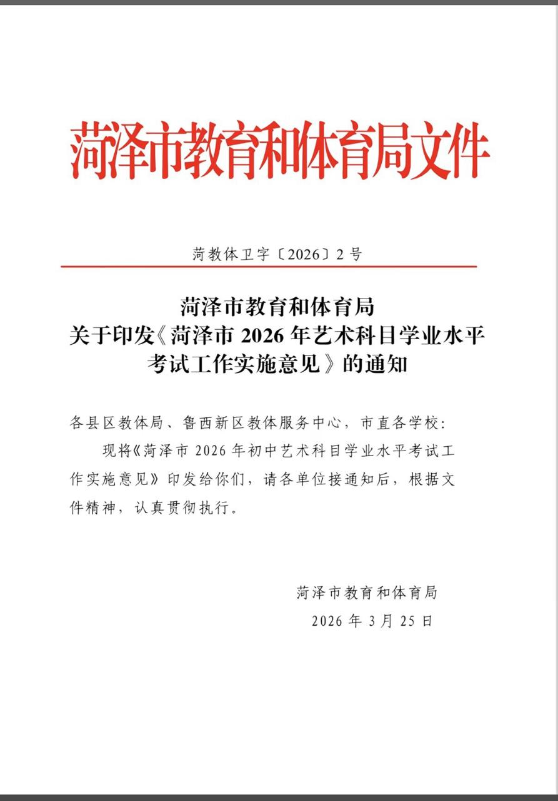
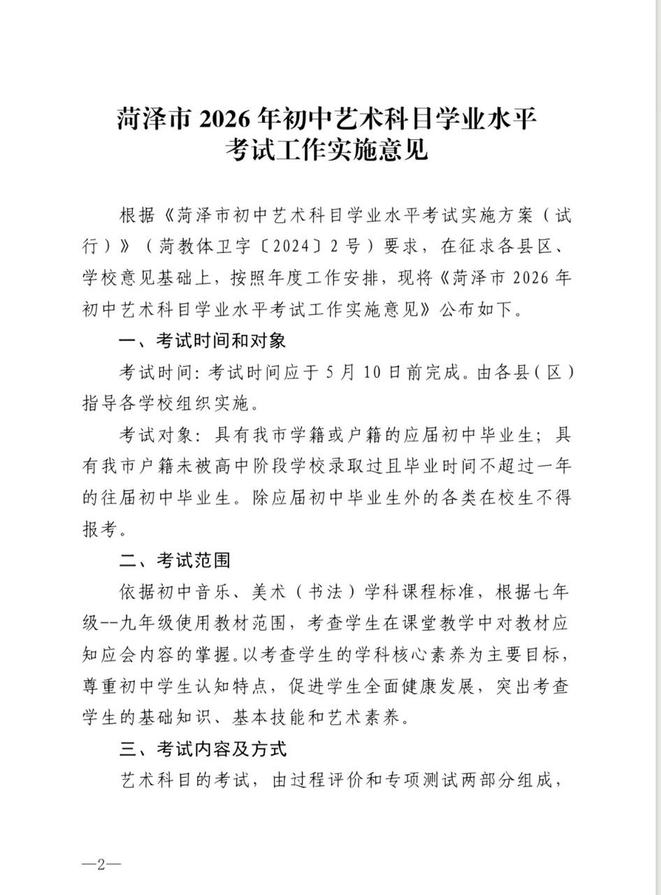

Sorcerer（三周目版）🍥🏳️⚧️
@Sorcerer198964
副科参加考试也是神人了
不过我们高中选科之前也是学九科的，实际上大家早就清楚应该选什么，不选的科目作业都懒得写混个学考差不多得了


李老师不是你老师
@whyyoutouzhele
网友投稿：山东菏泽。距离中考仅剩一个多月，当地教育局突然下发通知，新增音乐、美术两门考试。在原本已需应对12门考试科目的情况下再次加码，引发不少学生焦虑情绪。有学生反映，复习时间本就紧张，如今科目增加，学习压力进一步加重，甚至出现“学不过来”的情况。 https://t.co/B3EkyFJd4m